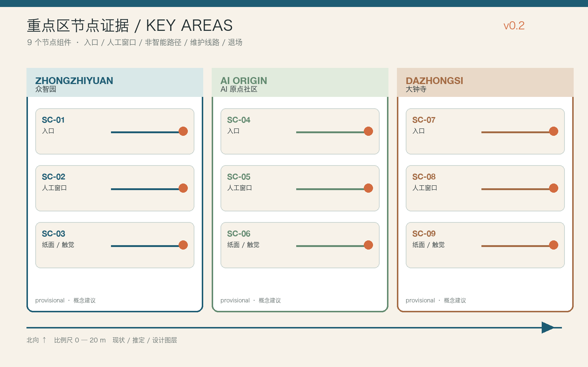
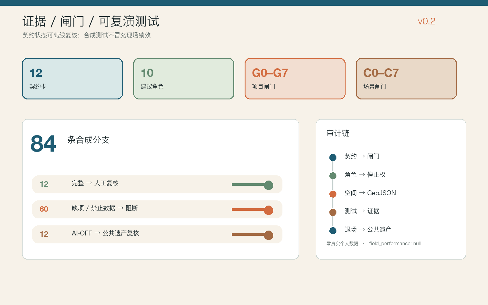
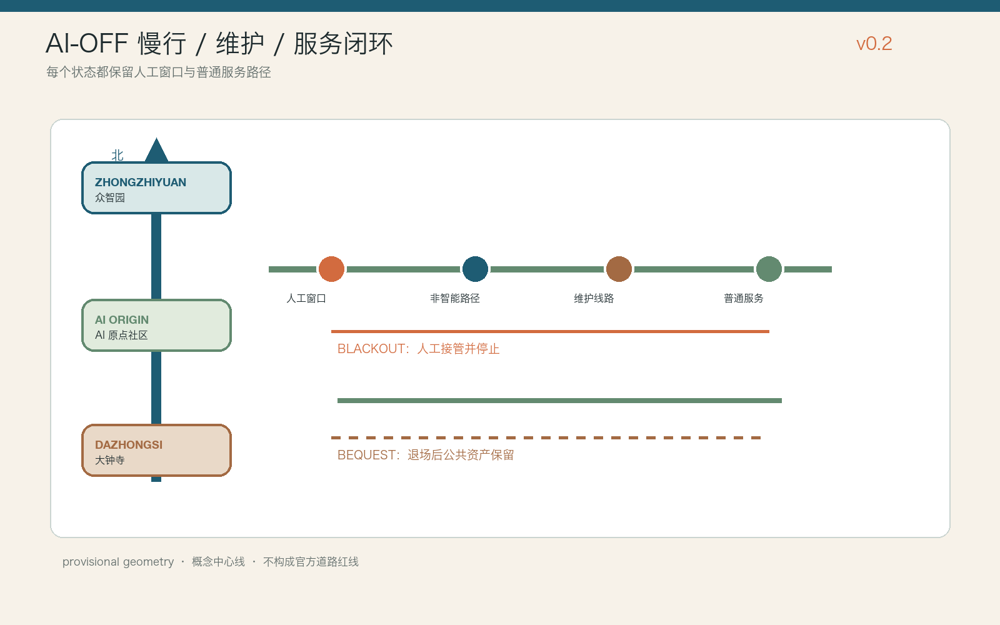

First 12 weeks
W00 baseline + deletion rule → W01–04 data / access / safety → W05–08 supervised reversible service → W09–11 blackout rehearsal → W12 independent review
Offline evidence room for contracts, gates, nodes, maintenance and exit.

Every scenario starts with ordinary public service and ends with retained civic assets. The media is presentation_only; the evidence is in the JSON, GeoJSON and drawings.
Zero real personal data. field_performance: null.


